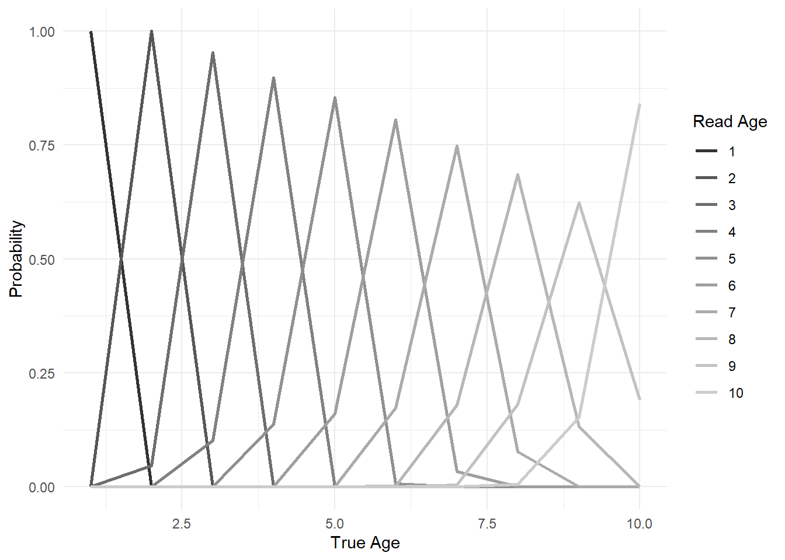
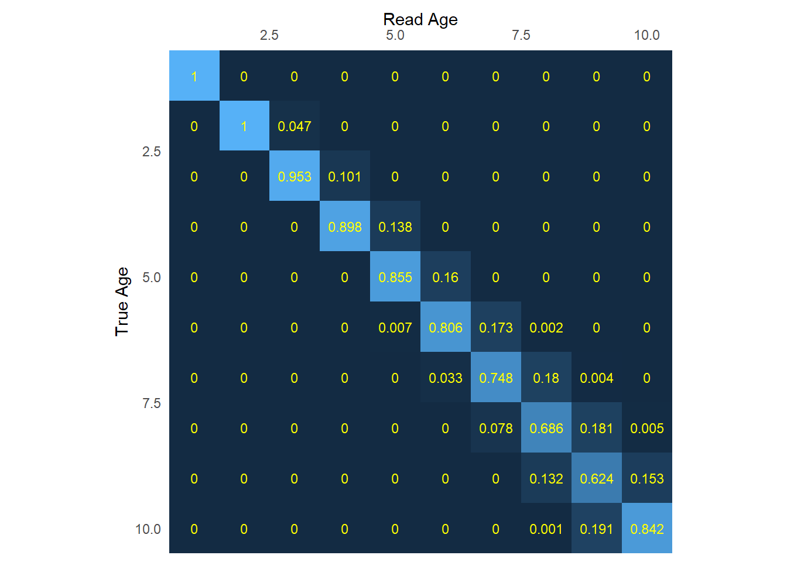
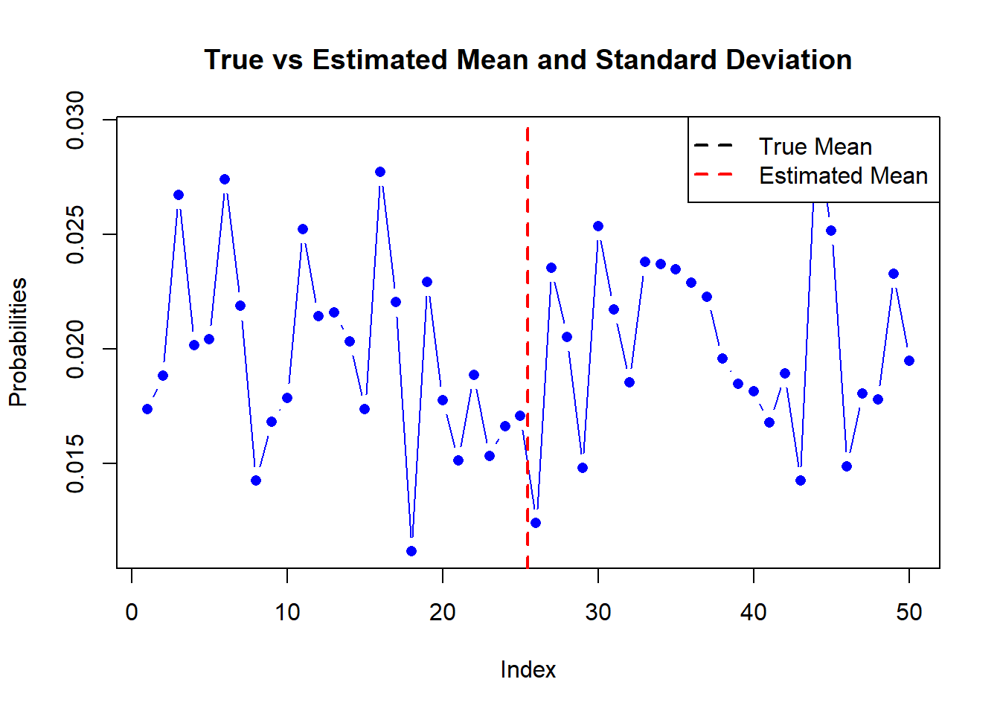

I revisit the inclusion of ageing error matrices frequently enough that I wanted to consolidate some notes here. None of this is new information; it is a resource for myself to get things straight, particularly when moving between the Stock Synthesis ageing error syntax and other setups like those used in our bespoke ADMB/TMB models. For this post, \(a\) will index true ages, \(\tilde a\) indexes read ages.
In this post, I will talk through the math behind the ageing error matrix, and show how one can develop such a matrix (with R code) given parameters concerning the bias and imprecision of their age reads.
Background
Ageing error concerns the imprecision that arises from misreading the annuli of a fish’s otolith. A given reader might mistakenly read an age-5 fish to be age-4 or age-6. This introduces a distortion in your observations, so we account for it within our models in hopes of lining things up with reality, given imprecision in the age-read process.
The mean divergence from the true age is called the “bias” in the SS3 manual. Setting this to -1 or [true value]+0.5 results in identical behavior, whereby there is no bias. This assumes that, on average, the read age \(\tilde a\) would be identical to the true age \(a\) .
Even in the absence of bias, there might be a spread of imprecision in the reads (‘uncertainty at age’ in SS speak). This can be represented as the standard deviation of \(\tilde a\) given \(a\), assuming a normal distribution.
Since lots of annuli are generally harder to distinguish than few, we’d expect precision to decline with age (but check with your life history program to get the specifics for your species). Regardless whether this is true, we would expect bias and precision to vary with age, which is why we typically deal with a set of vectors or a matrix, with unique values for each combination of \(a\), \(\tilde a\).
A dataset might be comprised of reads from multiple readers with non-systematic bias among them, hence the need for intercalibration. Check out an example for GOA Flathead Sole using the Punt et. al. (2008) approach.
Let’s pretend we’re working with 10 age bins ranging from 1 to 10 years. For simplicity we will assume that the data reads are also assigned to these same bins; anything read over age 10 will be accumulated into 10+ as a plus group.
I’m going to posit vectors of values like you might see in the data.ss file of a Stock Synthesis, continuing with the assumption that the ability to precisely read an otolith gets harder with more rings. Thus, both the bias vector and the precision vector increase as a function of \(a\).
These plots aren’t super helpful, but they give us a sense of how we’d expect the resultant matrix to behave.
Ageing Error Matrix Setup
We’ll build an empty matrix \(\mathbf P\) with dims \(a\) x \(\tilde a\). In practice this might be an array if you’re dealing with reads from multiple labs/fleets.
P_aa <-matrix(0, nrow = abins, ncol = abins)
Each entry in \(\mathbf P\) is described as “the probability of being read at age \(\tilde a\) given true age \(a\)”. If there were zero bias and zero imprecision (perfect age readers), we’d expect \(\mathbf P\) to be the identity matrix; a 100% chance that an otolith of true age 5 gets read as age 5, etc.
But, that’s rarely the case. The vectors we described above are the parameters of the (normal) distribution \(\Phi\) that underlies the assumed imprecision in ageing reads for each true age \(a\), as in:
\[
P_{\gamma,a,\tilde a}=
\begin{cases}
\Phi (\theta_2 ,a, \sigma_{a} ) & \tilde a = 1 \\
\Phi (\theta_{a+1} ,a, \sigma_{a} )-\Phi (\theta_2 ,a, \sigma_{a} ) & 1 < \tilde a < A \\
1-\Phi (\theta_A ,a, \sigma_{A} ) & \tilde a = A
\end{cases}
\]
In this notation, \(\theta_a\) is the lower limit of age bin \(a\) and \(A\) is the plus group. In words, we’re asking, “given that at true age \(a\) we expect a mean observation \(\tilde a\), what is the chance of observing a value within bin \(\theta_a\) to \(\theta_{a+1}\)?
Here’s a function that will take these arguments and return a singular probability value (\(P_{a,\tilde a}\)). You could also accomplish this via dnorm(), but note that we are using discrete bins.
getP_al <-function(theta, aa, sigma, maxage){ pal =NAif(theta ==1){ pal <-pnorm(theta, aa, sigma) } elseif (theta >1& theta < maxage){ pal <-pnorm(theta+1, aa, sigma) -pnorm(theta, aa, sigma) } elseif (theta == maxage){ pal <-1-pnorm(theta, aa, sigma) } pal}
You’ll notice this is exactly how I calculated the probability of length-at-age in my post about converting between measurement types here.
Populating the Matrix
Continuing our example, let’s pass the bias and imprecision vectors we established above to see how \(\mathbf P\) responds. I’m filling each element of \(\mathbf P\) one at a time. Sometimes you will need to make an assumption about the first age group to avoid a zero.
You’ll want to sanity check that the columns sum to one; in other words, are all possible true ages \(a\) accounted for under each read age \(\tilde a\)? Normalization, and occasionally some rounding to several decimals, are reasonable steps here.
Now let’s confirm that the shape of the probabilities looks reasonable. Generally, I expect to see what I call a “slumpy worm”: values with higher, narrow peaks at early ages, slumping to flatter, shallower peaks at older ages. The slumpy worm corresponds to the notion that it’s more likely for a reader to get a precise read on a young fish (it’s easy to count a small handful of annuli), whereas it’s harder to age an older fish (many annuli tend to get blurry and bunched up, but **check with your life history program!*).
There should be a spike at the ends for the plus group and age-0, if applicable.

And here’s what the actual populated matrix looks like:

Moving Backwards
What if you’re in a situation where you’ve inherited a bespoke model and have the values for \(\mathbf P\) but need the vector-style inputs for Stock Synthesis?
Generally, you can leverage the fact that the error matrix is normally distributed to back out the approximate mean and sd from your matrix. Even with a high number of bins this is not very precise, so the best practice is to go back to your original data and re-estimate the values (see the GOA FHS link here for a worked example). This will require individual age-reads, will take more time, and runs the risk that your resultant bias and precision estimates aren’t exactly the same as whatever was used inside your bespoke model. As an aside, this is why the SS syntax is preferable for conserving model integrity across years. If the original code to develop your bespoke matrix is lost, there really isn’t a guarantee you can retrieve the parameters to re-generate it.
Here’s an example with a single vector of 50 age bins; you could embed this in a loop for your matrix (see below). Note that whatever imprecision occurs in the estimation of \(\mu\) will be carried forward to \(\sigma\), so we would not expect precise results. Other ideas could be bootstrapping from the data.
# Set the known mean and standard deviationn_bins =50known_mean <- n_bins*0.45known_sd <- n_bins*0.1# Generate the probabilities from a normal distributionset.seed(123) # Set seed for reproducibilityprobs <-rnorm(n_bins, mean = known_mean, sd = known_sd)probs <- probs /sum(probs) # Normalize probabilities to sum to 1# Calculate the estimated mean and standard deviationmean_est <-sum(probs * (1:length(probs)))sd_est <-sqrt(sum(probs * ((1:length(probs)) - mean_est)^2))# Print the estimated mean and standard deviationcat("True Mean:",known_mean, "Estimated Mean:", mean_est, "\n")
True Mean: 22.5 Estimated Mean: 25.43766
cat("True SD:",known_sd,"Estimated Standard Deviation:", sd_est, "\n")
True SD: 5 Estimated Standard Deviation: 14.56367
# Plot the comparisonplot(1:length(probs), probs, type ="b", pch =16, col ="blue",xlab ="Index", ylab ="Probabilities", main ="True vs Estimated Mean and Standard Deviation")abline(v = mean_est, col ="red", lwd =2, lty =2)abline(h = known_mean, col ="black", lwd =2, lty =2)legend("topright", legend =c("True Mean", "Estimated Mean"), col =c("black", "red"),lwd =2, lty =2, pch =c(NA, NA), pt.bg =c("black", "red"))

Here’s some code to do this within an optimization routine, but it’s not perfect – some assumptions have to be made about \(\sigma\), among other things.
# Generate the probability matrixn_rows <-10n_cols <-10true_means <- (1:abins)+0.25# True means for each column true_sds <-seq(0.5, 1.5, length.out = n_cols) # True standard deviations for each columnprobs <-matrix(0, nrow = n_rows, ncol = n_cols)for (j in1:n_cols) { probs[, j] <-dnorm(1:n_rows, mean = true_means[j], sd = true_sds[j]) probs[, j] <- probs[, j] /sum(probs[, j]) # Normalize probabilities to sum to 1}# Estimate the means for each columnmeans_est <-numeric(n_cols)for (j in1:n_cols) { init_mean <-0# Initial mean value for optimization# Define the objective function for the current column objective_col <-function(mean) { random_vals <-dnorm(1:n_rows, mean = mean, sd = true_sds[j]) random_vals <- random_vals /sum(random_vals) sum_sq_diff <-sum((probs[, j] - random_vals)^2)return(sum_sq_diff) } optim_result <-optimize(f = objective_col, interval =c(-10, 10)) means_est[j] <- optim_result$minimum}# Estimate the standard deviations for each columnsds_est <-numeric(n_cols)for (j in1:n_cols) {# Define the objective function for the current column objective_sd <-function(sd) { random_vals <-dnorm(1:n_rows, mean = means_est[j], sd = sd) random_vals <- random_vals /sum(random_vals) sum_sq_diff <-sum((probs[, j] - random_vals)^2)return(sum_sq_diff) } optim_result_sd <-optimize(f = objective_sd, interval =c(0, 10), maximum =FALSE) sds_est[j] <- optim_result_sd$minimum}# Print the estimated means and standard deviationsrbind(means_est, true_means)